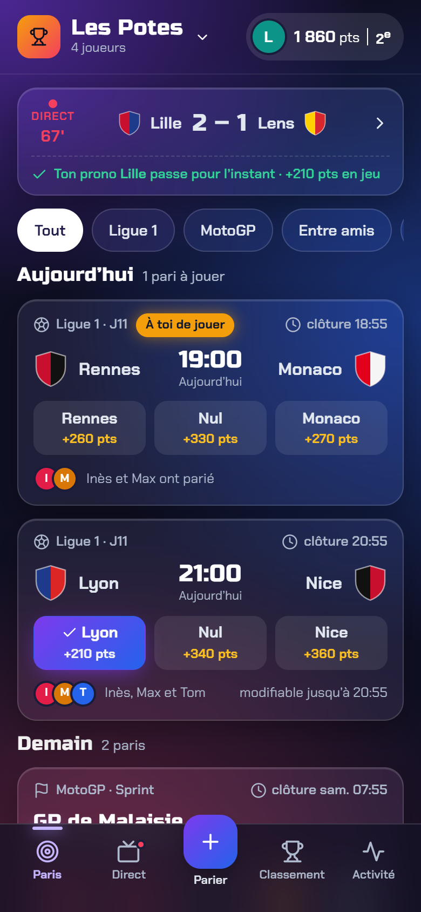

Tribune
Le programme de match : blocs francs, rouge club et or du trophée.

Vibrant & Block-based
Nocturne
Match en nocturne : noir OLED, chiffres de tableau d’affichage, vert « ça passe ».

Dark Mode (OLED)
Récré
Entre potes, sans prise de tête : néo-brutalisme, traits noirs et couleurs pop.

Neubrutalism
Arène
Soirée e-sport : verre dépoli sur fond néon, typo de jeu, or du classement.

Glassmorphism
Vestiaire
Sobre et lisible : style suisse, noir et blanc, un seul vert pour ce qui gagne.

Minimalism & Swiss Style